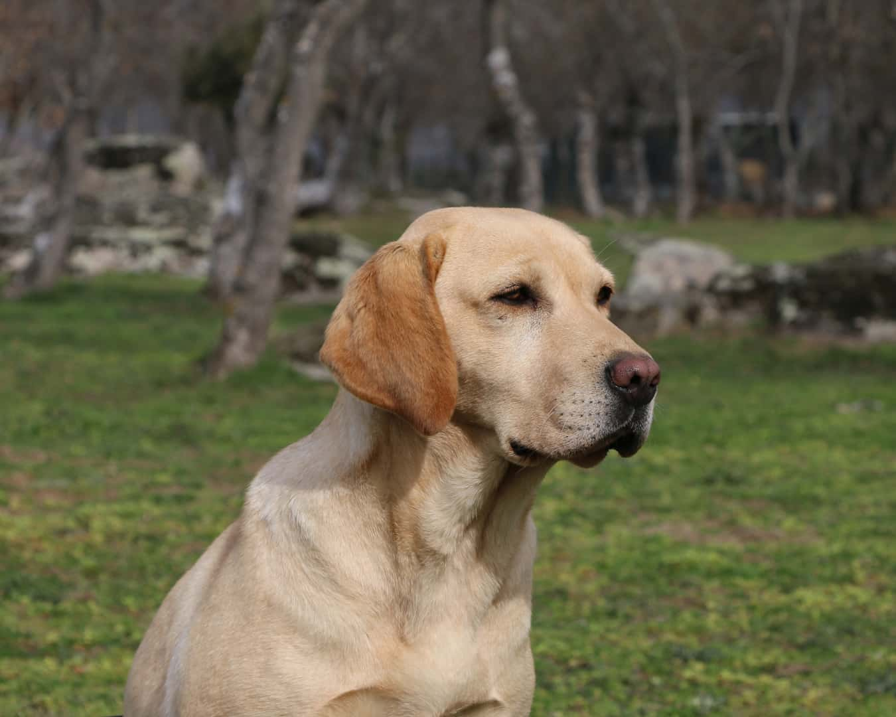
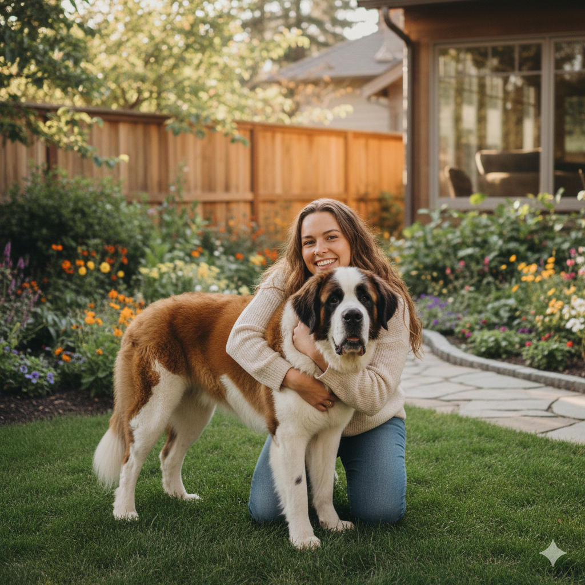
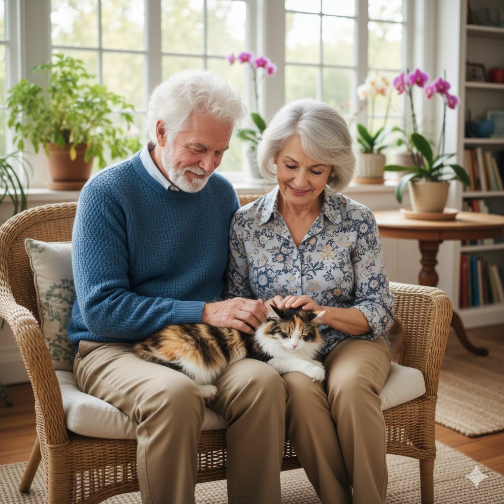

Historias de Éxito

Max ♂
Max era desconfiado y huía de todos. Un rescatista pasó semanas llevándole comida hasta que él permitió acercarse. Fue llevado al refugio, donde lo trataron por desnutrición y garrapatas. Ahora Max corre por un jardín enorme con sus nuevos dueños y convive con otros perros.

Bruno ♂
Bruno era un mestizo de tamaño mediano que había sido encontrado en la calle, asustado y muy delgado. En el refugio, pasaba la mayor parte del tiempo escondido en un rincón; no ladraba, no jugaba, simplemente esperaba.
Un día llegó Ana, quien buscaba un perro tranquilo para acompañarla en sus caminatas matutinas. Cuando vio a Bruno temblando, decidió sentarse a su lado sin tocarlo, solo hablándole suave. Después de unos minutos, Bruno apoyó su cabeza en sus piernas. Ana sintió que él la había elegido. Tras adoptarlo, Bruno pasó de ser un perro temeroso a uno lleno de energía. Ahora corre feliz por el parque, su transformación fue tan grande que el refugio usa su historia para inspirar a otros adoptantes.

Kira ♀
Luna, una gatita tímida rescatada de un edificio abandonado, se escondía de todos. Un matrimonio mayor notó su curiosidad desde su refugio y decidió adoptarla. Al principio solo salía por las noches, pero poco a poco ganó confianza. Hoy es cariñosa, sociable y la reina del sillón en su nuevo hogar.